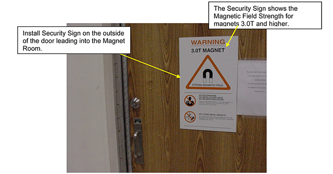
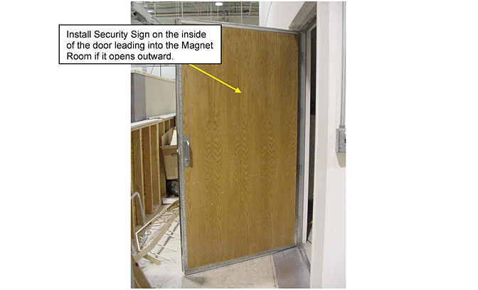
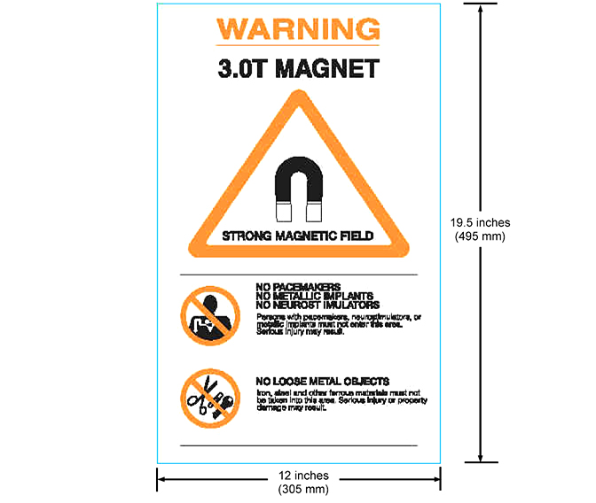
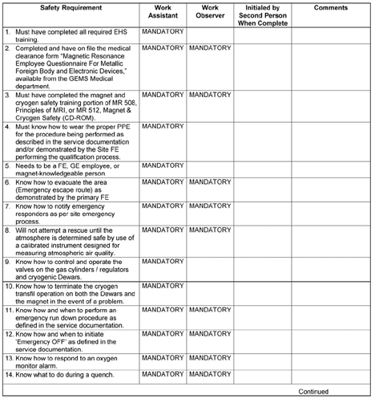
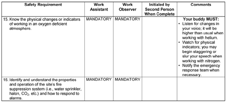

Operating Documentation
Direction 5670000, Rev# 1
Optima MR450w 1.5T Service Methods
Module Version 2.0, Version Date 9/29/09
Operating Documentation |
The Magnetic Resonance Imaging (MRI) System utilizes a magnet, which can have a field strength several thousand times greater than that of the earth's magnetic field. The magnetic field surrounding the magnet is called the fringe field, and it extends form the magnet's isocenter in all dimensions. The fringe field may present a hazard to personnel and equipment within the surrounding area. Therefore, magnetic field precautions must be applied to the floors above and below the magnet, as well as to the surrounding space on the same level. To minimize the risk to personnel and equipment when the magnet is at field, follow the precautions listed below:
Post “SECURITY ZONE” signs, on both sides of any doors that lead into the magnet room to alert personnel of the high magnetic field and not to bring ferromagnetic objects into the magnet room. See Illustration 1 and Illustration 2. For Systems with field strengths less than 3.0T use part number 46-255325P1 (Illustration 4). For 3.0T Systems use part number 2360019 (Illustration 5). For a 7.0T System use part number 2360019-2. For a 9.4T System use part number 2360019-3.
Post “WARNING” signs, part number 46-255326P1, outside the 5 gauss zone alerting personnel with cardiac pacemakers, neurostimulators and other biostimulation devices of the effect of the magnetic field on these devices. See Illustration 3. Post these signs two days prior to the activation of the magnet for maximum impact
Set up the “AUTHORIZED PERSONNEL” signs, part number 2289812, at the entrance(s) to the magnet room prior to the start of magnet service procedures. See Illustration 6.
Notify responsible personnel two days prior to the activation of the magnet to allow for preparatory actions to be accomplished
Do not bring ferromagnetic objects (including TOOLS, pens, tape measures, and vacuum pumps) into the magnet room when the magnet is at field unless otherwise called for in the service documentation
Measure the gauss levels in the surrounding area and make sure the 5, 100, and 250 gauss zones are specified for the site
Do not bring ferromagnetic objects within the 250 gauss zone and do not bring ferromagnetic objects on wheels within the 100 gauss zone
Use only nonmagnetic cylinders, nonmagnetic cylinder carts, and Dewars when transferring cryogens into an energized Superconducting magnet
Do not take self-winding watches, magnetically coded credit cards, magnetic recording heads, magnetic tapes or cameras near the magnet when it is at field
Identify the magnetic field strength of the system before entering the Magnet Room to perform service procedures. For Systems with a magnetic field strength of 3.0T and higher the field strength is displayed on the Security Sign posted on the magnet room door
Do not bring the non-magnetic tool kit into the magnet room. The case has ferrous components that will result in it being attracted to the magnet in field zones > 500 gauss
| NOTE: | The Local GE Field Service Operation will provide the
signs in the primary local languages. The highly visible (orange,
black, and white) security and warning signs are available from GE
under the following catalog numbers:
|
Illustration 1: Security Sign on Outside of all Magnet Room Doors

Illustration 2: Security Sign on Inside of Magnet Room Doors the Open Outward

Illustration 3: Magnet Field Warning Sign (46-255326P1)

Illustration 4: Magnetic Field Security Zone Sign (46-255325P1) for Magnets < 3.0T

Illustration 5: Example of Magnetic Field Security Sign for Magnets 3.0T and Higher

Illustration 6: Authorized Personnel Sign (2289812)

The Magnet technology used on MR Systems may vary from one product design to another. There are 3 basic magnet technologies used by suppliers today: 1) Superconducting Magnets, 2) Permanent Magnets, and 3) Resistive Magnets. Each magnet technology will have emergency response processes unique to that design. For example, If a person is pinned to the magnet by a ferromagnetic object or that object has become attached to the magnet then the Magnet technology will dictate the appropriate action to be taken. Therefore, go to the appropriate Magnet section in this document and refer to the First Aid/Emergency Situations subsection for specific actions. This document addresses designs relating to Superconducting Magnets. The sections for Permanent Magnets and Resistive Magnets will be included in a future update of this document
Superconducting magnets contain cryogenic liquids (liquid helium = -452°F, -269°C; liquid nitrogen = -320°F, -196°C) and generate a three-dimensional magnetic field several thousand times the strength of the earth’s magnetic field. These conditions require safety precautions to be taken to prevent serious injury (cryogenic burns, asphyxiation, explosion, fire, shock, ferromagnetic projectiles or other magnetic field effects). The safety precautions/requirements contained in the following sections must be reviewed, understood and implemented prior to performing any service on a Superconducting Magnet. Make sure that all magnet service is performed by trained/authorized personnel and all safety equipment is in place
All persons working with cryogenic liquids should understand the following:
Nature and properties of liquid and gaseous helium and nitrogen
Specific instructions on the equipment and clothing
Use and care of protective equipment and clothing
Safety and first aid
Handling emergency situations such as leaks, spills and fires
The Field Service Engineer is responsible to make sure the following items are in compliance:
Review all service processes to be performed on the magnet with the facility safety officer or with the local authorities (i.e. fire department, safety council, etc.) and obtain any required permits prior to magnet commissioning and servicing.
Magnet room venting shall be installed, tested, and operating in conformance with site planning requirements.
A portable floor fan and exhaust duct shall be used to remove the cold nitrogen gas that stratifies at floor level, from the room to the outside, during nitrogen pre-cool.
The magnet shall be vented in conformance with the site planning requirements. Magnet plumbing and vent system shall be inspected for leaks during magnet installation.
The door into the magnet room must be secured in the open position prior to any service action that will result in the handling or release of cryogens from the magnet. The ceiling hatch and rear door shall be secured in the open position if in a mobile van.
Any service actions, which release large quantities of cryogenic gas, shall have provisions for exhausting the gas through the magnet vent system.
Make sure a second person (GE, contractor, or hospital personnel trained in these safety requirements) is present in the area during magnet service in case of emergency.
A working phone line accessing an outside line shall be available in case of an emergency.
Set up “Authorized Personnel Only” signs outside the magnet room door(s) prior to any magnet servicing.
Make sure an Oxygen Monitoring device is calibrated and operating properly before beginning any magnet service.
Always maintain a clear exit path no less than 28 inches wide.
Do not bring any ferromagnetic equipment, Dewars or cylinders into the magnet room when the magnet is ramped. They will become dangerous projectiles in the presence of the magnetic field.
Helium gas cylinders are pressurized to 2400 psi. Secure each helium cylinder before removing the protective cap and open the main valve very slowly to prevent any possibility of a fatal release of explosive gas. Make sure gas cylinders are stored in an upright secured position.
Firmly hold the unattached end of the gas hose during a purge to prevent hose’s “whipping“ motion.
Keep Dewars in the vertical position at all times. Dewars should have wheels mounted at the base for transport. If wheels are not present, use a low platform dolly, which fully encompasses the Dewar’s base for moving. Do not slide or roll Dewars. Use a suitable hand truck to move gas cylinders.
Make sure the transportation route for Dewars and gas cylinders is clear of obstacles and restrictions.
Check Dewars for high pressure and follow documented service procedures for reducing pressure prior to use.
Check all equipment, Dewars, and gas cylinders for leaks.
Make sure that safety relief valves and regulators are operating properly.
Store Dewars in a well ventilated area as outlined in the room ventilation pre-installation manual.
Contact of liquid cryogens or their vapors with the eyes can cause severe frostbite even when contact is too brief to affect the skin. Always wear safety glasses and face shield when handling cryogens.
Never allow any unprotected part of the body to touch cold magnet plumbing.
Protective clothing (long sleeve shirt, long pants, protective apron/jacket) and dry, non absorbent insulated gloves shall be worn when handling or being exposed to cryogens, to prevent cold burns from contact with the cryogenic liquid or gas.
Make sure a calibrated, functioning oxygen monitor is installed in the magnet room in conformance with site requirements or place a functioning portable oxygen monitor in the magnet room and cryogen storage area. The position of the O2 monitor sensor should be at a level that corresponds to the cryogen product being stored or dispensed (i.e., for liquid helium the sensor should be near the ceiling; for liquid nitrogen the sensor should be near the floor).
Smoking is prohibited in the magnet room and around cryogens. Liquid cryogens can liquefy atmospheric oxygen producing a highly enriched oxygen liquid.
When pluming a stinger, always point the stinger toward the ceiling and away from the face at a 45 degree angle.
Do not bring more than 1000 liters or 2 Dewars (whichever is less) of cryogens into the magnet room.
Do not bring nitrogen and helium Dewars into the magnet room at the same time.
RAMP MAGNET DOWN TO ZERO FIELD prior to any service requiring opening/exposure to the helium vessel and/or cryogenic gas/liquid, except for the removal of fill and ramp lead port caps or shimming, to prevent the possibility of a magnet quench and rapid expulsion of cryogenic helium gas and liquid.
Make sure non-ferromagnetic fiber or composition safety shoes are worn in the magnet room.
Observe helium vessel pressure gauge and vent the magnet down to < 0.5 psi before removing ramp/fill port caps or loosening component resulting in the release of cryogenic helium gas and liquid.
Never allow a helium Dewar to empty during a magnet fill, resulting in a magnet quench from the introduction of warm helium gas.
Wear proper personal protective equipment (PPE).
Use caution when inserting ramp leads into a ramped magnet to prevent a quench.
Avoid rapid head and eye movements when working near or inside the magnet bore to minimize dizziness.
Always have a work buddy available when performing work near or inside the magnet bore.
Never allow yourself to be positioned between the magnet and any unknown objects that may be brought into the magnet room.
Limit the access into the magnet room before performing service in the room. This can be achieved by installing a Yellow & Black Caution tape across the door opening and placing the “Authorized Personnel” sign below it.
Identify the type of Magnet and it’s field strength before performing service in the magnet room. The Security signs for systems with Magnetic Field Strengths 3.0T and higher are installed on the entrance doors into the magnet room. These signs indicate the field strength of the magnet that is inside the room.
Use caution when using the non-titanium tools on magnets with a field strength of 3.0T and higher as they do have an attraction to the magnet at fields over 500 gauss.
Do not bring the non magnetic tool kit into the magnet room. It will become attracted to the magnet if exposed to a field > 500 gauss.
Notify proper emergency responders.
Do not make any rescue attempts until the environment has been verified as being safe for normal occupancy, then move persons suffering from a lack of oxygen immediately to an area with normal atmosphere and seek medical assistance.
Use large volumes of tepid water, within the temperature range of 105°F (41°C) to 115°F (46°C), to flush frostbitten or cold burn areas and get medical attention immediately. Notify the physician that this is a cold burn.
In case of a magnet cryogenic vent failure during a quench stay near the floor where the oxygen will be and immediately exit the magnet room.
If a ferromagnetic object has become attached to the magnet and cannot be safely removed by two people, the magnet will have to be ramped down.
The magnet will create a fringe field that may present a hazard to other personnel working or visiting near the MR Suite. Make sure these precautions are followed to minimize risk to personnel.
Measure the gauss levels in the surrounding area and make sure the 5, 100, and 250 gauss zones are specified for the site.
Install the Security Zone signs on all doors leading into the magnet room. For magnets with a field strength of 3.0T and higher these signs will identify the field strength of the magnet inside the room. If the door swings outward from the magnet room then the signs must be installed on both sides of the door.
Post warning signs outside the 5 gauss zone, including areas above and below the magnet room, prior to ramping the magnet to warn personnel with cardiac pacemakers, neurostimulators, steel plates or other conditions affected by a magnetic field not to proceed into the area.
Post “Ramped Magnet” warning sign at magnet room entrance prior to ramping the magnet.
Notify site administration before ramping the magnet.
Remove all ferromagnetic material from the magnet room that is not properly installed on the system.
Prior to ramping the magnet make sure that the Magnet Rundown Unit (MRU) is operating properly.
Do not bring any ferromagnetic tools or objects into the magnet room when the magnet is ramped unless specifically called for in the service documentation.
Do not bring ferromagnetic objects within the 250 gauss zone and do not bring ferromagnetic objects on wheels within the 100 gauss zone.
Do not loosen any ferromagnetic components on a ramped magnet unless specifically called for in the service documentation.
Wear leather gloves when opening or closing the coldhead motor shield.
Use caution when opening or closing the top half of the coldhead motor shield. Never put your hand or fingers between the motor shield and mounting bracket.
A Superconducting magnet at field is a high energy storage device capable of discharging rapidly (quenching), creating a high voltage across the main leads. Make sure the following precautions are observed when ramping a Superconducting magnet.
When working with the main lead connections that are installed into a ramped magnet do not touch both main lead extensions at the same time or allow them to come in contact with one another.
Allow main lead extensions to cool before fully inserting them into a ramped magnet to prevent any possibility of a quench.
Make sure the power supply has passed all functional checks and the input power cable is disconnected before connecting it to the main power leads.
Make sure the final magnet “parking” current and voltage polarity has been recorded and will be available if a ramp-down is required. An incorrect polarity connection will result in a magnet quench.
Use the appropriate hold-down tool to properly secure ramp leads to the magnet.
Make sure the Magnet Rundown Unit (MRU) has been installed in conformance with the GE magnet service manual, the batteries have been charged for 24 hours and the MRU has passed the functional checks in conformance with the supplier manual before ramping the magnet.
Make sure the ramp-down methods covered in the introduction of the GE magnet service manual are fully understood by field service engineers involved with the MR equipment.
Hospital personal involved with the MR equipment should be familiar with the equipment operator’s manual and Magnet Rundown Unit operation.
Illustration 7: Service Procedure Safety Requirements
Illustration 8: Service Procedure Safety Requirements (Continued)
Illustration 9: Service Procedure Safety Requirements (Continued)
The Buddy System (second person on site) is required whenever service is performed on the Superconducting magnet subsystem. It is critical that a ”Buddy” is always present to ensure your safety. A ”Buddy” is more than just a second person that is ”around” while you are working. A ”Buddy” is someone who will maintain communication with you at all times and sound the alarm in case of an emergency and may even assist in performing the service procedure, if qualified.
All individuals selected to perform the task of either “Work Assistant” or “Work Observer” must comply with the prerequisite training and complete the certification form located in Table 1, Worker Certification/Agreement Form. A signed copy of the certification must remain on file at the customer site
Worker Certification/Agreement Form
| ||||
| All individuals selected to perform the task of either “Work Assistant” or “Work Observer” must comply with the prerequisites training and complete the certification. Do not allow a person to function as a buddy (second person) until all the Mandatory requirements are completed for the category being performed | ||||
Instructions: is to be completed by the individual that is being certified to function as either a Work Assistant or Work Observer
Instructions:Illustration 10 and Illustration 11 are to be completed by the Field Engineer responsible to perform any of the listed service procedures. He or she must certify the capabilities of the “Second Person” either by interview or training, and initial the appropriate “Assistant” or “Observer” column to show they have been certified
Illustration 10: SECOND PERSON – BUDDY REQUIREMENTS

Illustration 11: Second Person – Buddy Requirements (Continued)

Table 1: Certification Agreement
| I understand and will comply with the MR Buddy System Requirements (Print) Name of Buddy: Signature: Date: |
| I certify the person above meets or exceeds the MR Buddy System
Requirements for the selected category/procedures. (Print) Name of FE: Signature: Date: |
The Primary Field Engineer must keep the completed forms on site |